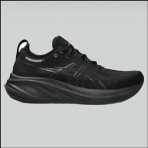
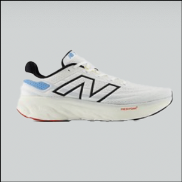
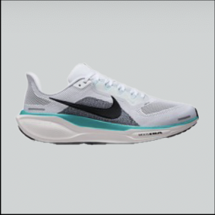

At finde den perfekte løbesko kan være en udfordring, især med så mange mærker og modeller på markedet. Uanset om du er nybegynder eller en erfaren løber, er valget af den rigtige sko afgørende for både præstation og komfort. Mærker som Asics, Nike og New Balance tilbyder et bredt udvalg, men hvordan vælger du den, der passer bedst til dig? Når du vælger løbesko, er det vigtigt at tage hensyn til din fodtype, løbestil og de underlag, du typisk løber på. Forestil dig, hvordan den perfekte løbesko kan forbedre din løbeoplevelse. Med det rigtige valg kan du reducere risikoen for skader, øge din løbeglæde og forbedre dine præstationer. Nike er kendt for deres innovative designs og teknologi, der hjælper med at optimere hastighed og komfort.
Hvis du prioriterer en blød, stødabsorberende oplevelse, vil New Balance's Fresh Foam-teknologi give dig den ønskede støtte. Til dem, der søger stabilitet, tilbyder Asics nogle modeller med den perfekte balance mellem komfort og støtte.
Nu hvor du har fået indsigt i de forskellige typer løbesko, er det tid til at træffe dit valg. Uanset om du foretrækker Nike for deres letvægtsdesign, New Balance for deres komfort, Asics for deres stabilitet, eller noget helt fjerde, er det vigtigt at prøve skoene og sikre, at de passer til dine personlige behov. Gør dit næste løb til en succes ved at vælge de rigtige løbesko!
Her er 3 eksempler på nogle af de bedste løbesko på markedet:
Asics "Gel Nimbus 26"

New Balance "1080"

Nike "Pegasus 41"

Hvis du vil se flere lækre løbesko, kan du med fordele hoppe ind på run21.com og læse deres artikel om de 10 bedste løbesko her.